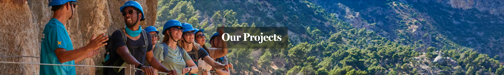
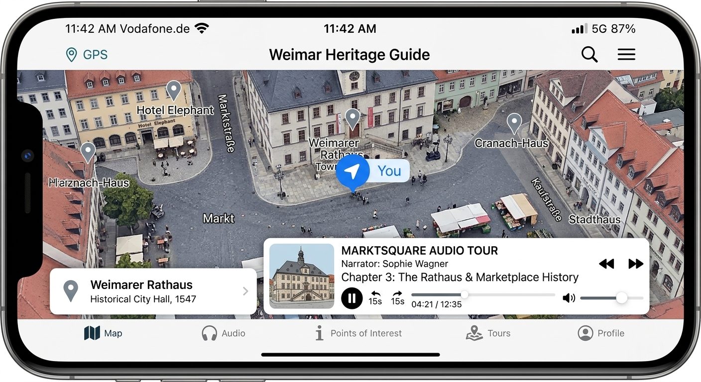
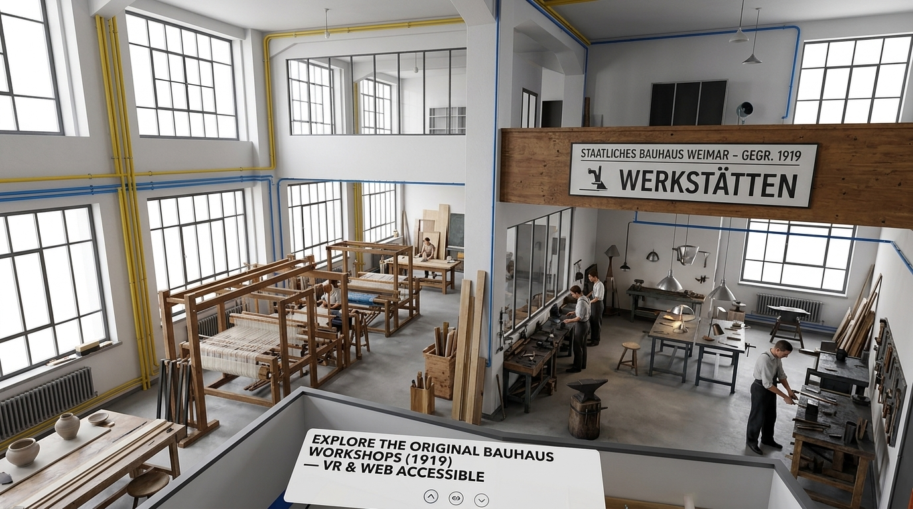
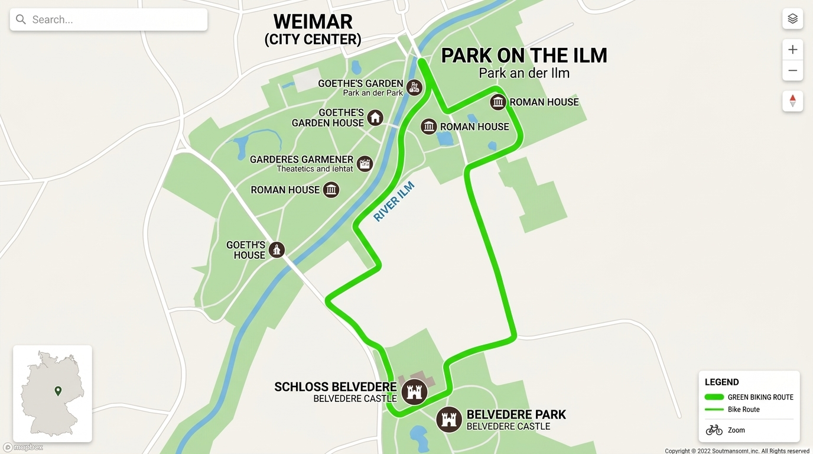
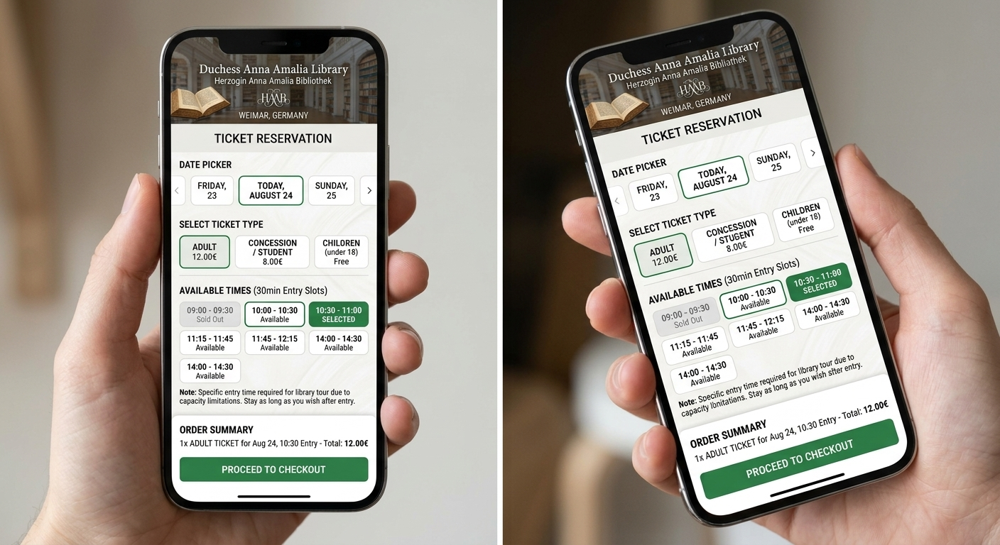
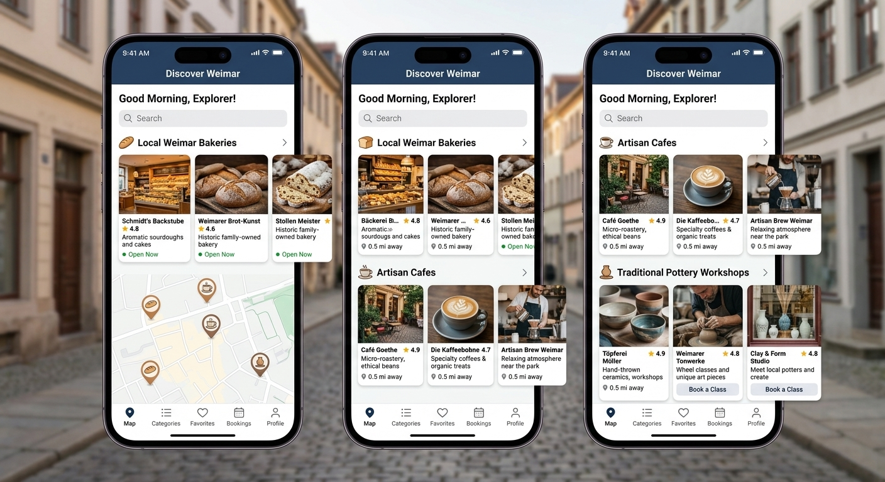

Our Projects | Innovative Initiatives in Weimar Tourism

Welcome to Weimar Travels project hub – your source for the latest company announcements, product launches, partnerships and brand updates.
We combine deep cultural heritage with modern digital solutions to enhance how travelers discover Weimar. Below is a showcase of our key digital products, interactive guides, and community initiatives designed to make classical history, architecture, and local culture accessible to global visitors.
1. Goethe & Schiller Interactive GPS Audio Guide
- Title: Goethe & Schiller Self-Guided Historic Walking Trail
- Image:
- Description: A location-aware mobile audio experience that automatically plays narrated historical insights as travelers approach key literary sites, including Goethe's Residence and Schiller's Home.
- Technologies Used:
- GPS Geolocation Tracking API
- Progressive Web App (PWA) Framework
- Web Audio API
- Offline Data Caching
- Project Link: Explore the Audio Guide Project

2. Bauhaus 1919 Virtual Reality Experience
- Title: Bauhaus 1919: Virtual 3D Architectural Reconstruction
- Image:
- Description: A digital reconstruction initiative allowing visitors to experience the historic Bauhaus workshop and the original Haus am Horn in full 3D interactive virtual reality before visiting in person.
- Technologies Used:
- WebGL
- Three.js
- Unity 3D Engine
- WebXR Device API
- Project Link: The Bauhaus VR Project

3. Eco-Weimar Green E-Bike & Walking Route Planner
- Title: Eco-Weimar Park & Countryside Navigation Engine
- Image:
- Description: An interactive routing platform designed to guide eco-conscious travelers through Weimar's sprawling parks, nature trails, and surrounding countryside using sustainable transport options.
- Technologies Used:
- Mapbox GL JS
- OpenStreetMap API
- Leaflet Open-Source Library
- React Native
- Project Link: The Eco-Planner Project

4. Duchess Anna Amalia Library Smart Ticketing Portal
- Title: Timed-Entry Reservation System for the Rococo Hall
- Image:
- Description: A real-time capacity management and reservation portal developed to streamline visitor flow, protect the fragile historic Rococo Hall, and eliminate long waiting queues for tourists.
- Technologies Used:
- Node.js & Express
- GraphQL API
- PostgreSQL Database
- Secure QR Code Scanner API
- Project Link: The Ticketing System Project

5. Weimar Artisan & Culinary Heritage Directory
- Title: Weimar Culinary & Artisan Local Discovery App
- Image:
- Description: A dedicated local discovery app built to connect visitors directly with independent artisans, traditional Thuringian food spots, and hidden courtyard cafes, promoting local commerce.
- Technologies Used:
- Flutter Multi-Platform Framework
- Strapi Headless CMS
- Google Maps Platform API
- Firebase Realtime Database
- Project Link: The Artisan Directory Project

6. Weimar Cultural Events & Concert Calendar Portal
- Title: Centralized Weimar Cultural Events & Booking Hub
- Image:
- Description: A dynamic digital event portal that aggregates live schedules for the German National Theatre, municipal classical concerts, and local festivals into a single, seamless booking platform.
- Technologies Used:
- Next.js (React Framework)
- Stripe Payments API Integration
- iCal & Google Calendar Sync API
- Amazon Web Services (AWS CloudFront CDN)
- Project Link: The Cultural Hub Project